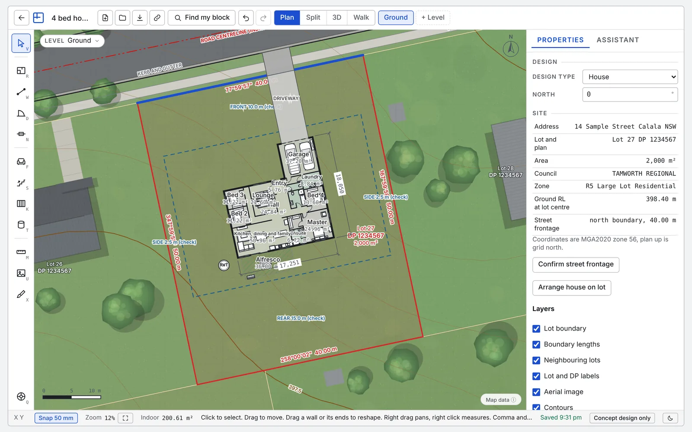

Plan library, granny flat
2 bedroom granny flat plans you can edit in 3D
Start from a ready made 2 bedroom granny flat and change it to suit your site.
Concept designs only. Not for construction or council lodgement.

The starting plan
About 60 m2 with an open kitchen, dining and living area, two bedrooms with robes, a bathroom, a laundry and a 2.4 m deep front deck.
If you already have a design saved in this browser, the tool opens that first. Choose New design and pick the template to start fresh.
About this starting plan
This starting plan is a 2 bedroom granny flat of about 60 square metres. It has an open kitchen, dining and living area, two bedrooms with robes, a bathroom, a laundry and a front deck 2.4 metres deep. Open it in Pocket Architect and the 3D model is already built, so you can orbit it, take the roof off and walk through it in first person.
Move walls, resize rooms, change the doors and windows, then add furniture and finishes to test how the space feels. A room area schedule shows on screen as you work. A plan like this is a useful way to settle a layout before you talk to a builder, a designer or your council.
This is a concept design only.
Common questions
What is a granny flat?
A granny flat is a small self-contained home on the same property as a main house. The name and the rules differ between states and councils, and in NSW it is often called a secondary dwelling.
How big is a granny flat?
The starting plan is about 60 square metres and you can resize it. The size allowed on your property depends on your state, your council and your site, so check with your council or the NSW Planning Portal before you settle on a size.
Can I build a granny flat on my property in NSW?
Whether a granny flat is allowed depends on your site and the planning controls that apply to it. Pocket Architect does not check planning rules or give approval advice. Check with your council or the NSW Planning Portal, and speak to a certifier or town planner.
Can you build a granny flat without council approval?
Approval pathways differ by site and by state, and Pocket Architect does not assess which one applies to you. Ask your council or use the NSW Planning Portal to find out what your site needs before you rely on any design.
How much does it cost to build a granny flat?
Build cost depends on size, finishes, site conditions and the builder, so we do not give a figure. Pocket Architect shows the floor area and a room schedule you can take to builders when you ask for quotes.
More starting plans
Pocket Architect produces concept designs only. They are not construction drawings, not development application or complying development documentation, and have not been checked against planning controls, the National Construction Code, BASIX or any standard. Engage a qualified designer, engineer or certifier before building.
Open the plan and make it yours.
Free to draw and view, with no sign-up. A$35 per job (incl. GST) unlocks one PDF plan set, a DXF for CAD and a 3D model file.